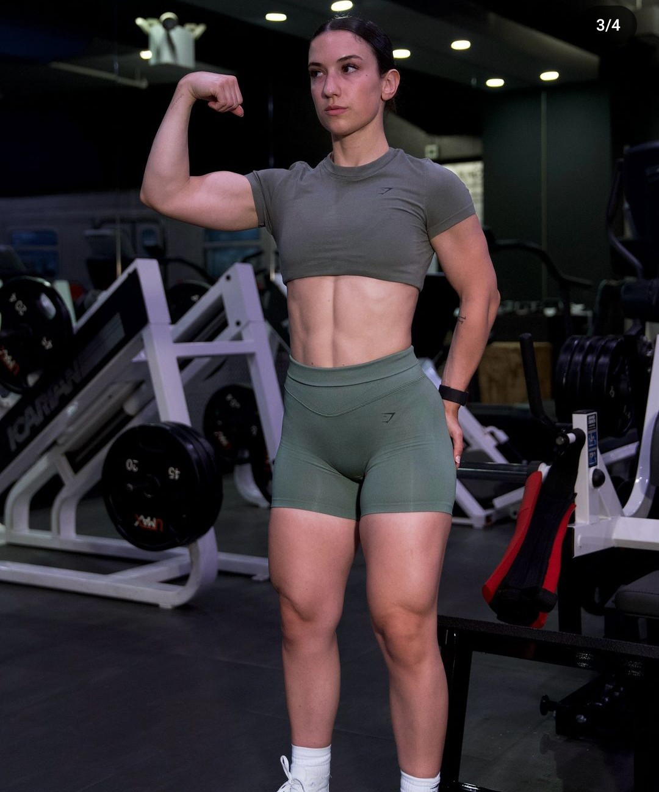

R.MENU
El gimnasio es uno de los lugares mas amados, temidos y odiados del mundo. No importa a cual lote pertenezcas, el gimnasio, imparcialmente, es excelente para calmar la ansiedad, mejorar tu calidad de sueno, combatir el estres, fortalecer tus musculos y huesos, asi como ayudar a mejorar tu figura y aumentar tu autoestima. Gracias a todos sus beneficios, no es sorpresivo que hayas planeado ir una, dos o tres veces. Comenzar en el gimnasio es una de las cosas que las personas apuntan en su lista de propositos de ano nuevo o en septiembre de cara a la vuelta al deporte, pero no todos llegan a cumplirlo.
Existen muchas razones por las cuales las personas abandonan el gimnasio, por ejemplo, por falta de objetivos, no tener la suficiente motivacion, o no poseer una rutina adecuada para ellos. Se que entrar en una sala llena de maquinas y personas desconocidas puede causarte muchos nervios si eres principiante y darte unas tremendas ganas de salir corriendo. En este blog te contare 7 tips para empezar en el gimnasio (y mantenerte asistiendo).
Lo primero que tienes que hacer, es preguntarte, ¿por que quieres asistir al gimnasio? La respuesta es fundamental para encontrar tu motivacion. Seamos objetivos, si no estas motivado, no asistiras al gimnasio. Tu motivacion para comenzar en el gimnasio puede ser perder peso, ganar fuerza, tonificar los musculos, sentirte mejor contigo mismo, aumentar la flexibilidad o, en general, llevar una vida mas saludable.
Si bien es importante tener tus metas y planes definidos, es importante plantearse objetivos realistas a largo y corto plazo para evitar la frustracion y desmotivacion. No es realista perder diez kilos en un mes, al menos, no de forma saludable. Y eso no es lo que buscamos aqui. Es preferible establecer metas pequenas, pero que puedas cumplir, pero que te llenen de orgullo y satisfaccion. Mientras mas metas pequenas cumplas, mas rapido estaras preparado para las mas grandes y, en cuanto menos te des cuenta, ya habras perdido esos diez kilos (o lo que desees lograr).
Parece algo irrelevante, pero escoger el gimnasio adecuado es fundamental. No solo debes buscar instalaciones que te resulten atractivas y comodas, tanto fisicamente como monetariamente, porque tambien es importante, sino que su ubicacion permitira que rompas con algunas excusas y puedas ir con mas frecuencia. Si se encuentra muy lejos de tu casa o trabajo, es mucho mas facil que pierdas la motivacion y comiences a posponerlo.

Una vez que encuentres tu motivacion y eliges el gimnasio, es importante contar con el equipo necesario para asistir al gym. No hay nada mas basico que ropa y zapatillas deportivas. En la tienda de Atmosfera Sport tenemos las marcas deportivas mas reconocidas del mercado, que incluyen todo lo que necesitas para comenzar con el pie derecho en el gimnasio. Desde camisetas, pantalones y mallas, hasta zapatillas comodas y transpirables.
Luego que decidas que accesorios llevaras a tu primer dia, es importante que siempre tengas la bolsa de deporte lista un dia anterior. Levantarte y ya tener todo organizado te ayudara a lidiar con la pereza y evitar la excusa “manana empiezo”, que se ira alargando, pero no llegara nunca el dia.
Una de las mejores decisiones que puedes tomar al comenzar en el gimnasio, es conseguir un entrenador. No importa si eres hombre o mujer, un entrenador te ayudara a crear la rutina de ejercicios perfecta, que vaya acorde con tu cuerpo y tus objetivos. Recuerda que hacer mal los ejercicios, y no contar con nadie que te corrija en el momento justo, puede ocasionar lesiones y trabajar partes que no te interesan ejercitar..
Aprovecha el entrenador y resuelve todas tus dudas. Es la guia perfecta para pasar por los ejercicios y ayudarte a lograr tus objetivos con mas rapidez.
Se que cuando te apuntas al gimnasio es porque quieres ver resultados, y, la mayoria de las veces, los quieres ver inmediatamente. Sin embargo, lamento decirte que eso no funciona asi. No seran visibles los primeros dias o semanas, pero cada cuerpo es un mundo, por lo que los tiempos son diferentes para cada persona. En este proceso, la constancia es fundamental para ver los resultados.
Un error que puedes cometer como primerizo, es dar mas de lo que puedes, con la esperanza de adelantar los resultados. ¡Ni se te ocurra! No puedes forzar a tu cuerpo a soportar cosas para las que no esta preparado. No te desanimes si al comienzo no puedes seguir el ritmo, la constancia te ayudara a cada vez ser mas fuerte y ganar memoria muscular.
La motivacion es importante para empezar en el gimnasio, pero si no anotas los progresos que has logrado, podras perderla rapidamente. Te recomiendo apuntar todos tus avances para que te hagas consciente de lo que estas logrando. Los logros pueden ser pequenos o grandes, lo importante es reconocer los avances que estas realizando. Ya sea si perdiste algunos kilos, si aumento tu resistencia o si tus musculos estan mas marcados.